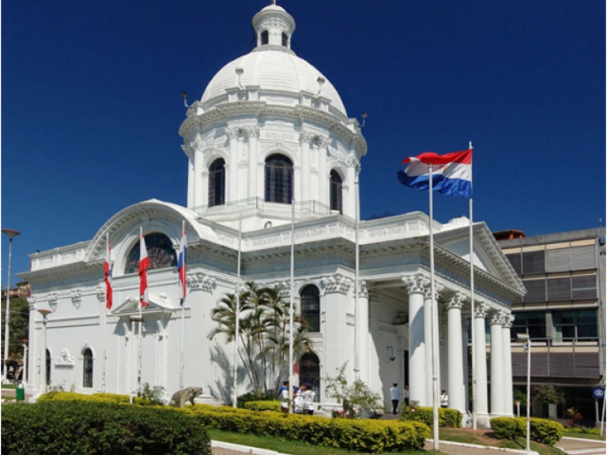
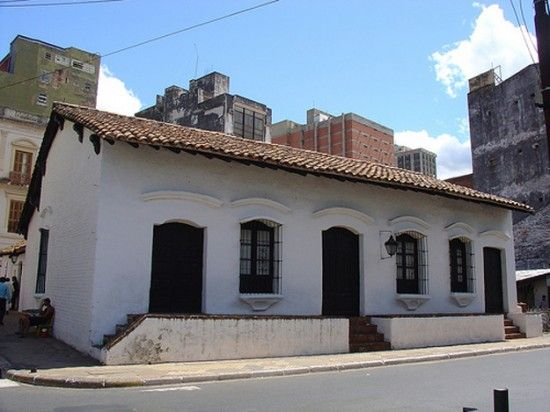
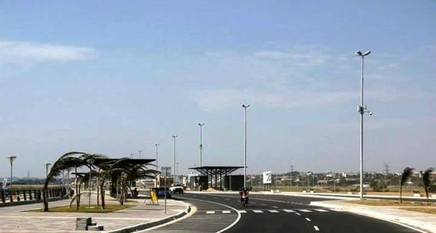

ASUNCIÓN
Asunción es la ciudad capital de Paraguay rodeada por el río Paraguay. Es conocida por su gran Palacio de López, la sede de gobierno que alberga las oficinas presidenciales. Cerca, el Panteón Nacional de los Héroes tiene un mausoleo y placas que conmemoran las figuras históricas de Paraguay. El Museo Casa de la Independencia se caracteriza por su arquitectura colonial y cuenta con artefactos que documentan la emancipación del régimen español.

Andrea: Cerca del paseo costero está el edificio del Cabildo con su exterior color rosa y sus columnas. Es sede de eventos culturales y exhibiciones turísticas de arte. En el este, el Museo del Barro presenta obras de arte, artesanías y cerámicas precolombinas, junto con una moderna colección de arte. Al norte, el Jardín Botánico alberga extensas áreas de césped muy bien cuidadas y un zoológico. En las cercanías, está el Museo de Historia Natural, con exhibiciones científicas de la flora y la fauna regional. El Museo Etnográfico Dr. Andrés Barbero exhibe colecciones indígenas que incluyen pipas, tocados con plumas de colores vivos y canoas talladas.
El Panteón Nacional de los Héroes y Oratorio de la Virgen Nuestra Señora Santa María de la Asunción se encuentra entre las calles Palma y Chile en pleno microcentro de la capital de Paraguay, Asunción.
El Palacio de López, también llamado usualmente Palacio de Gobierno o Palacio Presidencial, es la sede del gobierno de la República del Paraguay, debido a que ahí se encuentra el despacho oficial del presidente de la República. Es uno de los edificios más emblemáticos de la capital paraguaya, Asunción.
El Museo Casa de la Independencia en Asunción, fue inaugurado el 14 de mayo de 1965. Ubicado en la esquina de las calles Presidente Franco y 14 de Mayo, destaca en él su marcado estilo colonial.
El Jardín Botánico y Zoológico de Asunción es un jardín botánico y parque zoológico que se encuentra en Asunción, capital de la República del Paraguay.
La Avenida José Asunción Flores es una avenida y calle peatonal de Asunción, Paraguay, inaugurada en el año 2012. El primer tramo se inicia en la Calle Colón y termina en la Avenida General Santos. El segundo tramo, actualmente en construcción, se extenderá desde la Avda. General Santos hasta la Avda.
